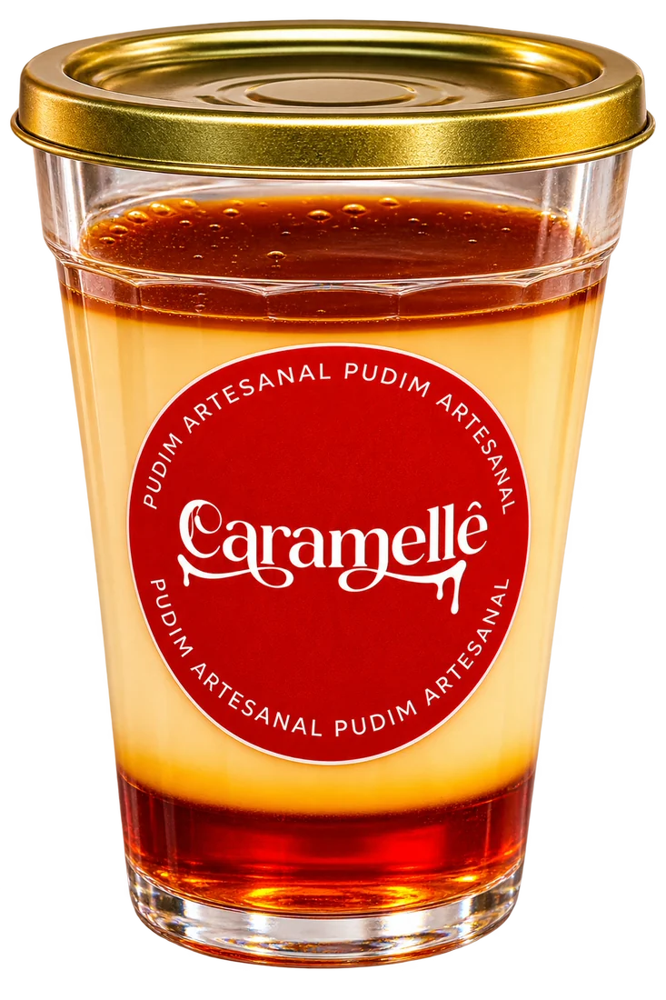
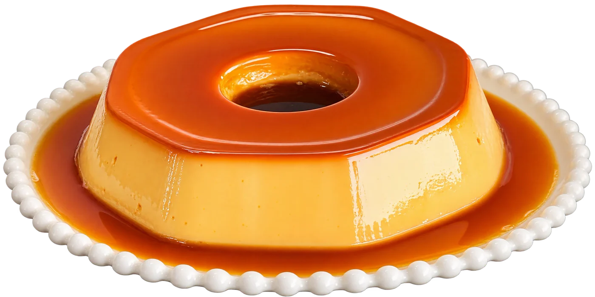
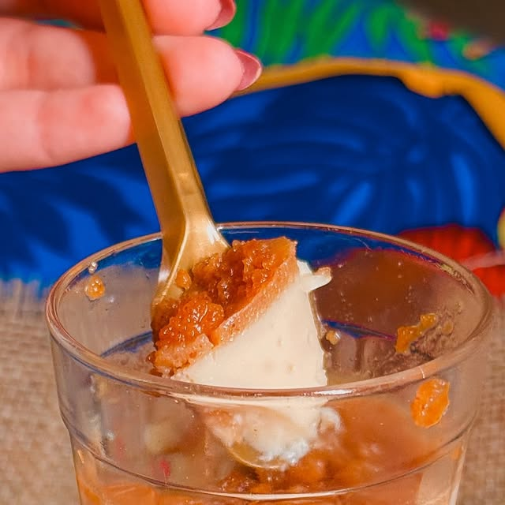
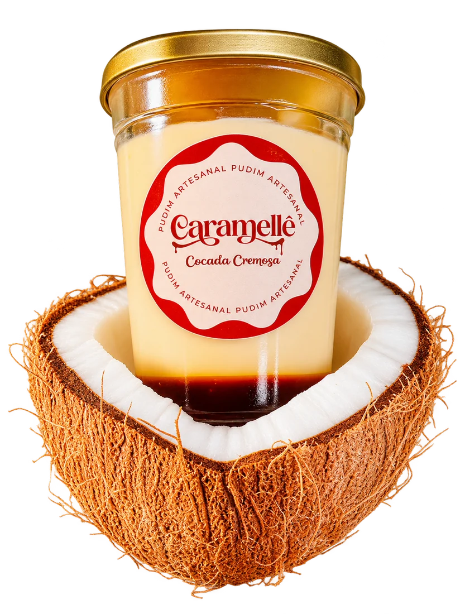

“Amor em forma de pudim, só peçam.”
CLIENTE · COMENTÁRIO NO INSTAGRAM
Pudim artesanal no copo americano. Direto de Campina Grande para a sua mesa.
Quero o meuCaramellê · Campina Grande
O Caramellê nasceu em Campina Grande com uma ideia simples: fazer o pudim que a gente lembra, só que ainda melhor. Cremoso, com a calda no ponto, âmbar e brilhante, sem amargor, escorrendo devagar a cada colherada.
Cada copo sai da cozinha feito à mão, em pequenos lotes, e vem no clássico copo americano de vidro, que fica com você depois da última colher. Também tem a versão de 1 kg, para dividir. Ou não.
— irresistível até a última colher.
Calda no ponto e cremosidade perfeita.
Intenso na medida, cremoso e viciante.
Metade chocolate nobre, metade pudim tradicional.
Pudim de Ninho com geleia artesanal de morango.
Muita Nutella. Sem miséria.
O sabor mais nordestino, com coco artesanal.
Dois tamanhos

O clássico individual, de vidro, com tampa dourada. E o copo fica com você.

Lançada em novembro, para dividir à mesa. Mais pudim, mais cremosidade e a mesma calda irresistível.
Edição limitada · São João

A cremosidade do pudim artesanal com o sabor da verdadeira paçoca. Conquista já na primeira colherada.

O sabor mais nordestino do São João, com coco preparado artesanalmente.
Consulte a disponibilidade no cardápio.
Edição limitadaQuem já provou
“Amor em forma de pudim, só peçam.”
CLIENTE · COMENTÁRIO NO INSTAGRAM
“O melhor pudim de Campina Grande.”
CLIENTE · COMENTÁRIO NO INSTAGRAM
“Quando faz com amor é assim, sensacional.”
CLIENTE · COMENTÁRIO NO INSTAGRAM
“Quem prova aprova.”
CLIENTE · COMENTÁRIO NO INSTAGRAM
“Surreal de bom.”
CLIENTE · COMENTÁRIO NO INSTAGRAM
“Impossível escolher um só.”
CLIENTE · COMENTÁRIO NO INSTAGRAM
Quem somos
A Caramellê nasceu para transformar uma das sobremesas mais amadas em algo ainda mais especial: pudim artesanal, cremoso e irresistível em cada colherada.
A gente cuida de cada etapa, do ponto da calda ao copo que chega até você. O ingrediente principal é sempre o carinho e a dedicação em cada uma delas.
Também está em
Quer ter o pudim Caramellê no seu restaurante? Fale com a gente.